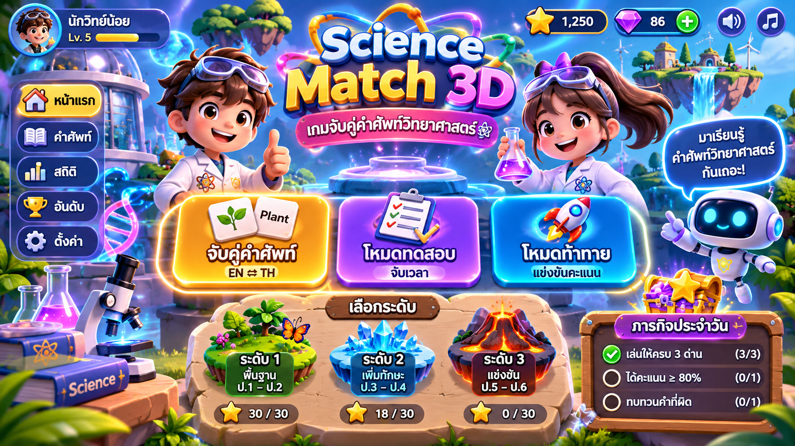

SCIENCE MATCH 3D
🧬 EXAM

🚀 SCIENCE ADVENTUREจับคู่คำศัพท์ • เก็บดาว • พิชิตด่าน
ภารกิจจับคู่คำศัพท์วิทยาศาสตร์
คำสำคัญสำหรับเตรียมสอบประถม • อังกฤษ ↔ ไทย
0คะแนน
1ด่าน
0ตอบผิด
ENGLISH
ภาษาไทย
🔊 แตะคำภาษาอังกฤษเพื่อฟังเสียง • กดซ้ำเพื่อฟังอีกครั้ง
เล่นออฟไลน์ได้หลังเปิดเว็บหนึ่งครั้งและติดตั้ง PWA • เสียงอ่านใช้ระบบเสียงของอุปกรณ์ (อาจไม่รองรับออฟไลน์ทุกเครื่อง)